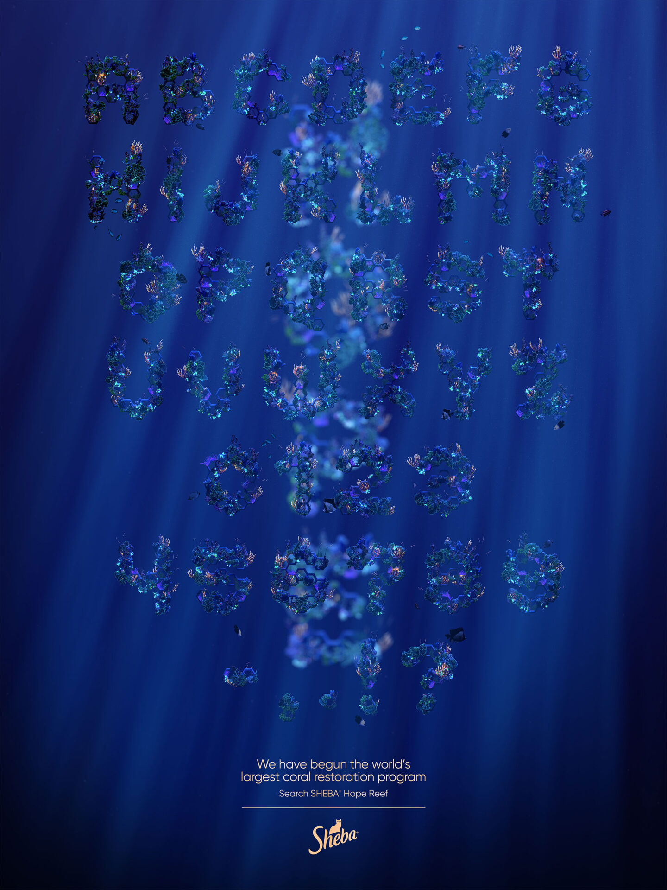
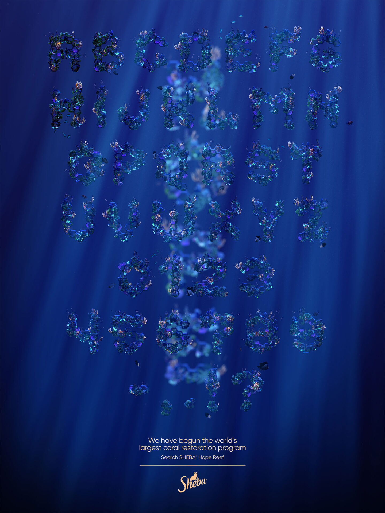

HOPE GROWS
WeAreSeventeen
Date : 2021
A Procedural font for Sheba's
Hope Grows coral restoration project.
Taking the team's existing coral species setups, I modified and combined them into a tool where inputting a character would provide a fully procedural growth with all coral species interacting and growing with each other. The tool also included various settings and parameters which could be easily changed to provide different variations and control of the coral.
This project has gone on to win the Industry Craft Typography Grand Prix Cannes Lion, a 2022 D&AD Wood Pencil, a 2022 One Show Bronze Pencil and a Bronze and Silver Creativepool 2022 Annual award.
Taking the team's existing coral species setups, I modified and combined them into a tool where inputting a character would provide a fully procedural growth with all coral species interacting and growing with each other. The tool also included various settings and parameters which could be easily changed to provide different variations and control of the coral.
This project has gone on to win the Industry Craft Typography Grand Prix Cannes Lion, a 2022 D&AD Wood Pencil, a 2022 One Show Bronze Pencil and a Bronze and Silver Creativepool 2022 Annual award.
 

Full documentation at weareseventeen.com/projects/hope-grows